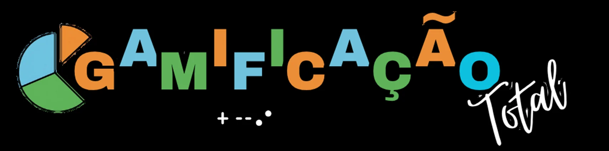

Perícia visual · Brasil do século XIX · Vestibular
As obras chegaram ao laboratório. Observe pistas, confronte interpretações e descubra o que elas revelam e escondem sobre a sociedade brasileira.
Nova investigação
Cada entrada começa com zero ponto. Os subsídios necessários para responder estão nas pranchas de análise e cada etapa concluída será salva no ranking.